Investissement
Quatre opérations à instruire
Aménagement urbain, commerce, immobilier neuf et international : les dossiers sur lesquels je travaille en ce moment, avec les éléments de programmation et les critères d'implantation. Chaque dossier est transmis complet, sur demande.
Projet d'aménagement · Briançon
Rhône-Azur — nouveau quartier à Briançon
58 700 m², 350 logements, un parc et un hôtel : requalifier le site du Sanatorium.
Un parc et une vue exceptionnelle sur les montagnes, sur une parcelle de 58 700 m². La nature s'est développée autour des bâtiments existants et le projet entend conserver cette valeur paysagère. Qualité architecturale et circulations fonctionnelles relient l'ensemble du complexe. Le programme prévoit création et réhabilitation pour un total de 350 logements.
- Site du Sanatorium Rhône-Azur, position stratégique au-dessus de Briançon
- Recherche d'implantation d'un hôtel de chaîne internationale (environ 1 500 m² de surface utile)
- Centre de conférences visant la clientèle JO 2030 et le tourisme d'affaires
- Trame paysagère conservée, stationnements et circulations repensés
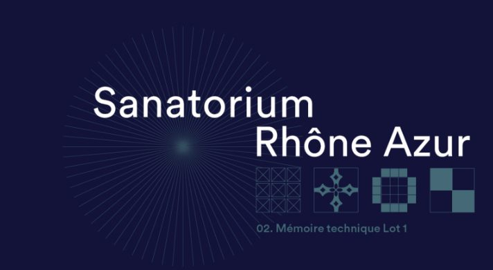
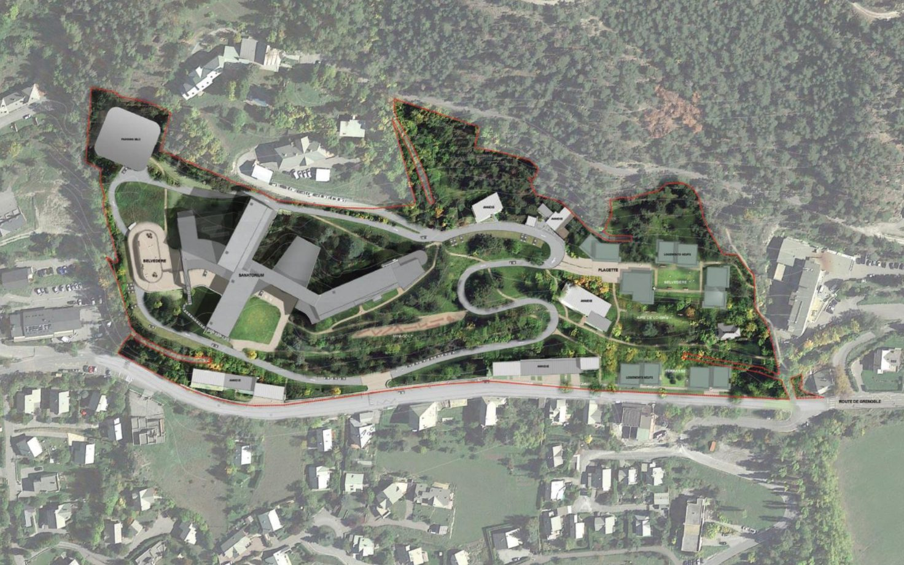
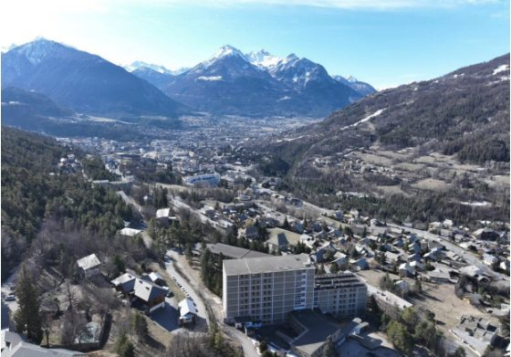
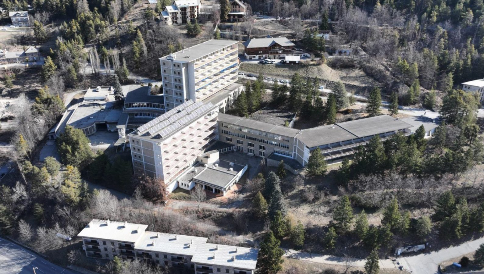
Partenariat · Paphos · Limassol · Nicosie
Investir à Chypre
Partenariat avec Aristo Developers : plus de 500 propriétés à la vente.
Depuis plus de 40 ans, Aristo Developers s'est imposé comme l'un des plus grands promoteurs immobiliers de Chypre, premier promoteur à y construire des complexes de golf, des établissements éducatifs, des centres commerciaux et des parcs aquatiques. Le promoteur propose actuellement plus de 500 propriétés à la vente dans les régions de Paphos et Limassol, ainsi que des terrains à Nicosie.
- Pearl Park Residences à Paphos : appartements et maisonnettes de 1 à 3 chambres
- Résidence fermée avec piscine commune, salle de sport et jardins paysagés
- Accompagnement sur la carte de résident permanent
- Programme transmis sur demande, avec brochures et grilles de prix
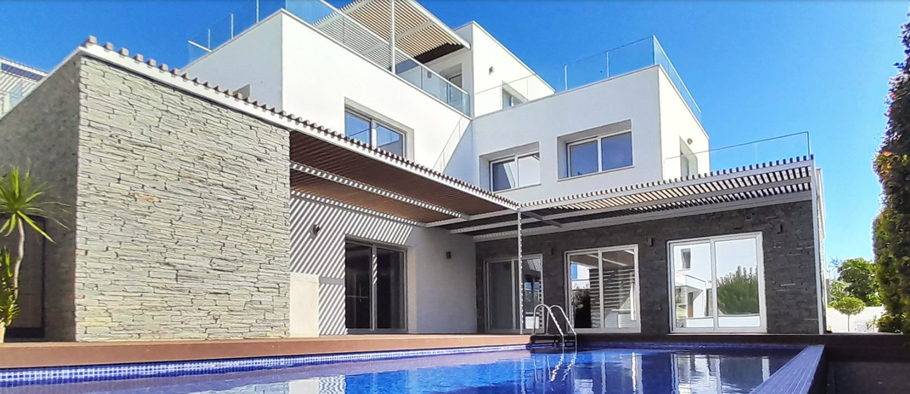
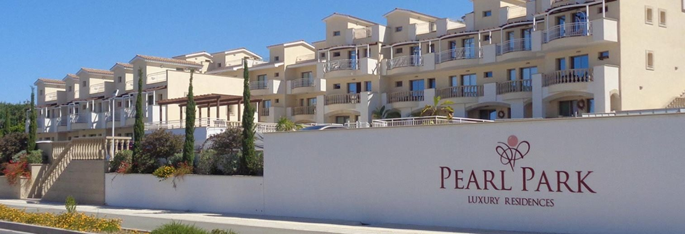
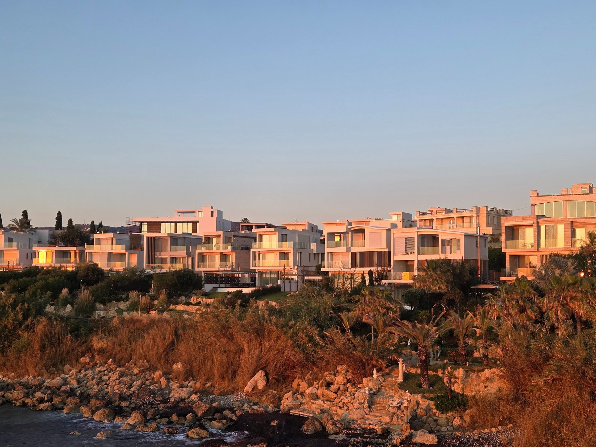
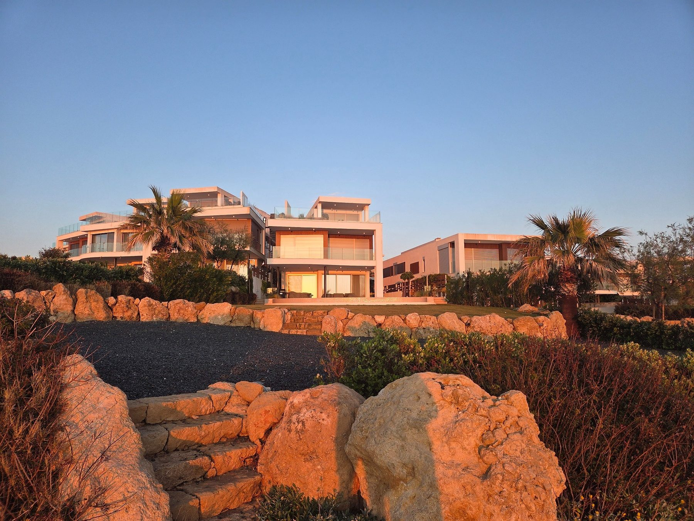
Recherche de locaux et terrains · National
Enseigne NOZ — plan de développement France
Murs commerciaux, terrains et locaux : les critères d'implantation de l'enseigne.
L'enseigne NOZ développe son réseau en France et recherche des emplacements répondant à ses critères d'implantation. Nous accompagnons les propriétaires et les porteurs de projet qui disposent d'un bien correspondant au cahier des charges.
- Locaux d'activité proches des zones commerciales, si le PLU autorise le commerce de détail
- Projets d'investissement commercial à partir de 650 m², VEFA/BEFA acceptées
- Espace jardin : murs libres construits, parking obligatoire, hors centre-ville
- Acquisition privilégiée ; locations étudiées si elles débouchent sur un achat
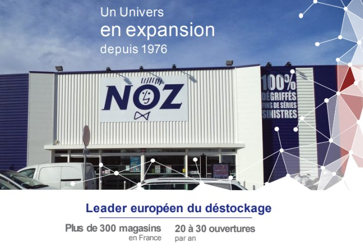
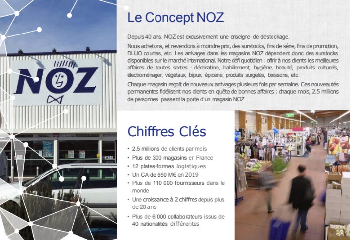
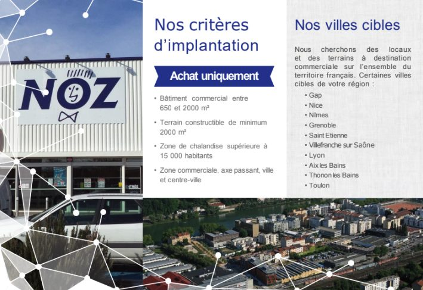
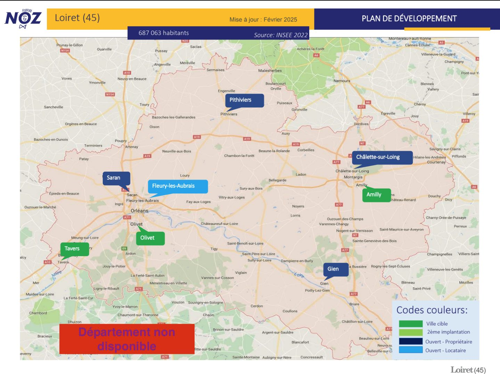
Commercialisation · Briançon — nouveau cœur de ville
Résidence Orma by Icade
Appartements du T2 au T6 à 300 m des remontées du Prorel, livraison 3ᵉ trimestre 2027.
Située à 300 mètres des remontées mécaniques du Prorel, dans le nouveau cœur de ville de Briançon, la résidence Orma bénéficie d'un accès facile aux pistes comme aux sentiers de randonnée. Architecture contemporaine signée Christophe Gulizzi, inspirée des casernes militaires et revisitée. Prestations haut de gamme : robinetterie, revêtements de sol, meubles de salle de bain et platelages bois extérieurs.
- Local commercial de 306 m² en rez-de-chaussée, livré brut
- 2 places de parking affectées au commerce ; local R-1 de 71 m²
- Approche énergétique durable (biomasse)
- Plans et grille de prix transmis sur demande
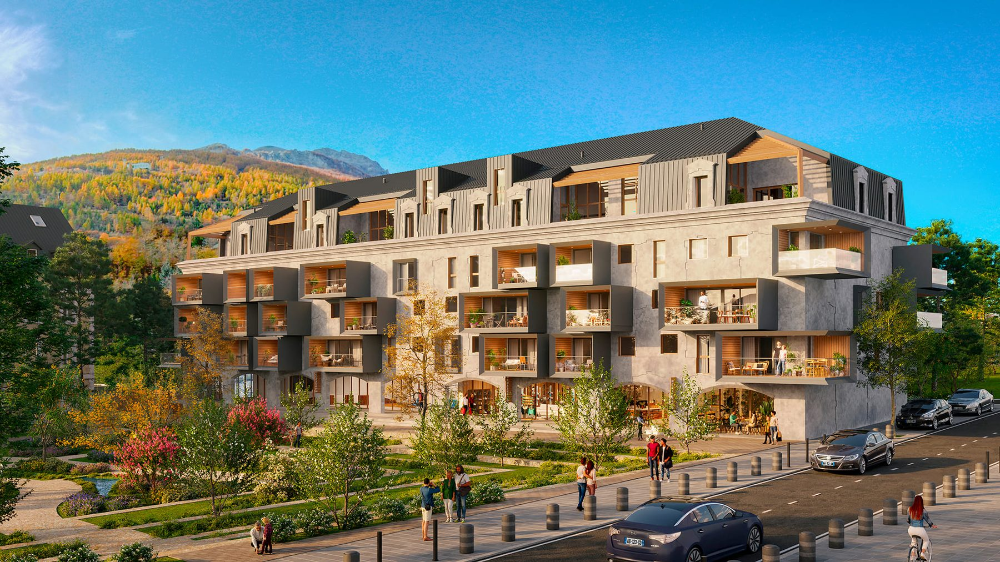
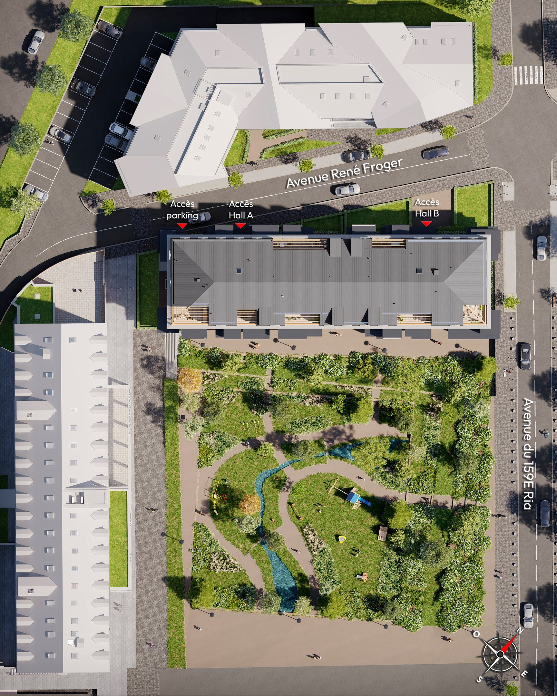
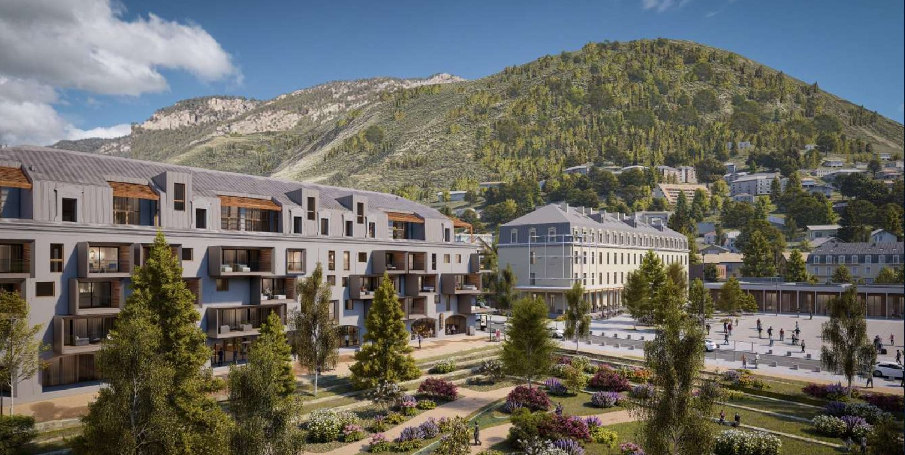
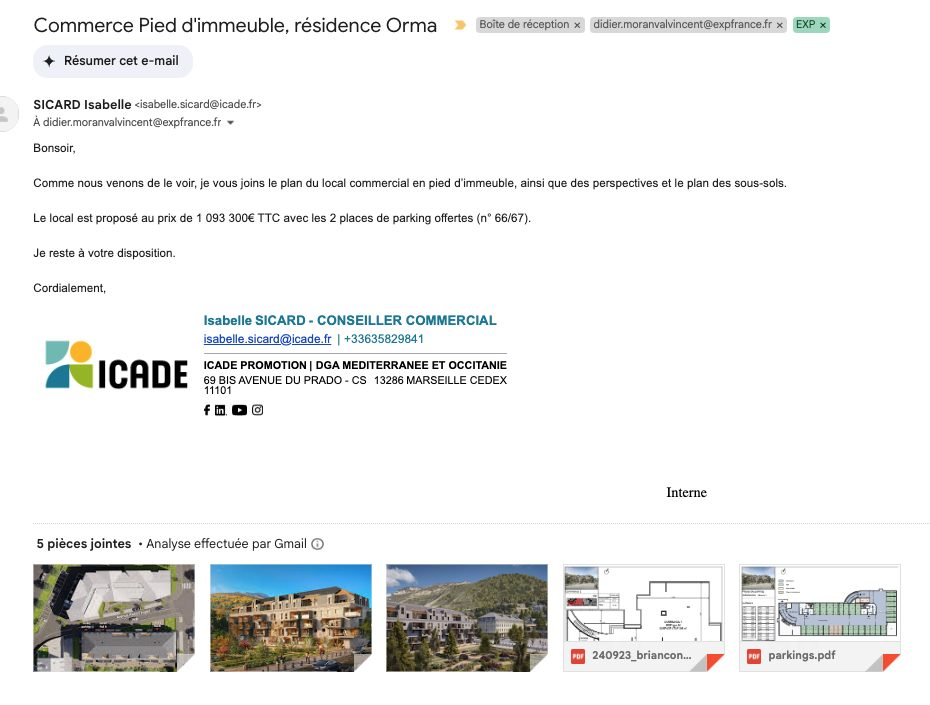